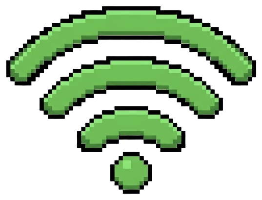

H
HYDRO
SENSE
DATE // --.--.----
--:--:-- WIB

CONNECTING
READINGS
000000
CURRENT PH
LIVE
6.85
pH LEVEL
CURRENT TSS
LIVE
0
mg/L
WATER LEVEL
LIVE
0
%
CURRENT PH
LIVE
6.85
pH LEVEL
PROBE VOLTAGE
STABLE
1385.55
mV
TELEMETRY HISTORY
LAST 60 MINUTES
7.20
6.85
6.50
13:32
14:02
14:32
CURRENT TSS
LIVE
0
mg/L
SENSOR TURBIDITY
STABLE
0
NTU
TSS TELEMETRY
LAST 60 MINUTES
100
50
0
CURRENT TANK LEVEL
LIVE
0
%
ECHO DISTANCE
STABLE
0
cm
LEVEL TELEMETRY
LAST 60 MINUTES
100
50
0